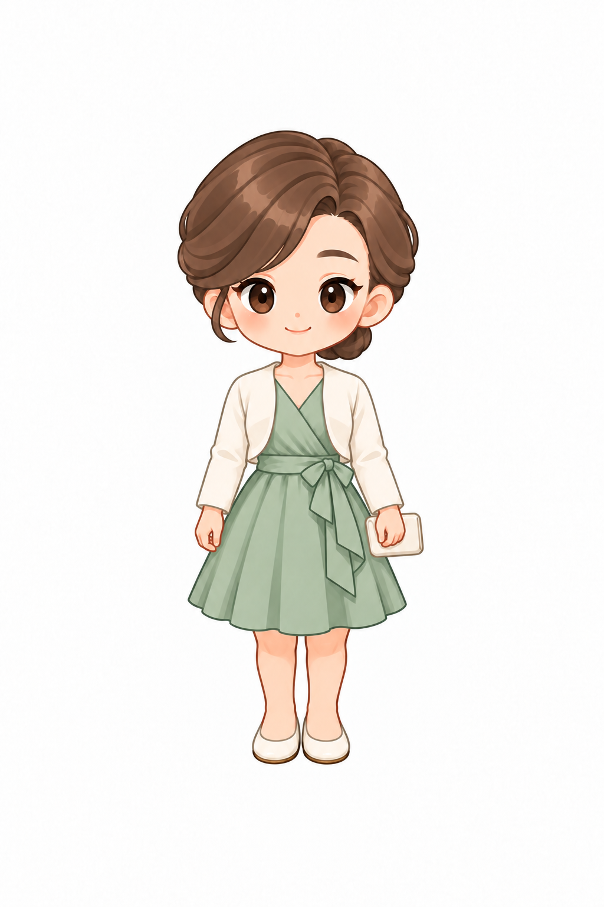

8번 · 네 방향 원본 리그
제작 중 · 운영 미반영. 더스티로즈 의상·가는 팔·허리 매듭 검수 중. 원본 레이어 분리와 보행 출력 연구입니다. 최종 시각·실제 UI 검수는 아직 완료되지 않았습니다.
정면 · 2번

5번 승인 스타일 기준192×288머리 72 · 몸 144 · 전체 216px 공용 골격. 2·4번은 같은 중립 자세입니다. 실제 선택 화면·맵·서비스 워커 검증을 이 연구 페이지로 대신하지 않습니다.
네 방향 16프레임 검수표